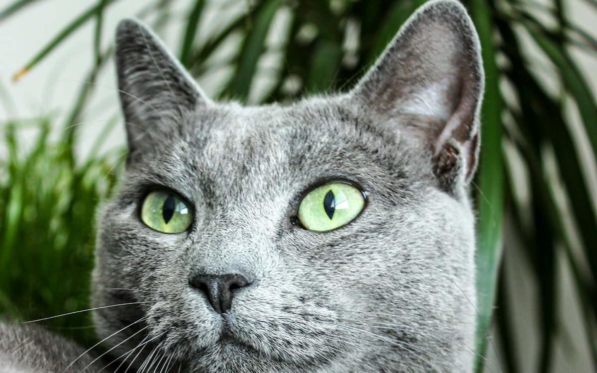

러시안블루 키우기 완벽 가이드 — 성격·수명·건강·알레르기

은회색 단모와 에메랄드빛 초록 눈이 트레이드마크인 러시안블루는 조용하고 온순한 성격으로 사랑받습니다. 목소리가 작아 아파트 생활에 잘 맞고, 알레르기 유발 물질이 상대적으로 적다고 알려져 있어 특히 관심을 받는 품종이에요. 성격부터 건강까지 정리했습니다.
한눈에 보는 러시안블루
| 크기 | 중형 (체중 약 3~5kg) |
|---|---|
| 수명 | 약 15~20년 (장수하는 편) |
| 털 | 은회색 단모 (털빠짐 적은 편) |
| 성격 | 조용하고 온순, 낯가림 있음 |
| 목소리 | 작음 (아파트 적합) |
| 초보자 적합도 | 높음 |
성격과 기질
러시안블루는 차분하고 조용한 성격의 대표 품종입니다. 큰 소리로 우는 일이 드물고 얌전해서 소음에 민감한 주거 환경에서 장점이 큽니다. 낯선 사람이나 새로운 환경에는 다소 경계하지만, 한번 마음을 연 가족에게는 곁에 머물며 깊은 애착을 보입니다.
변화를 별로 좋아하지 않아 규칙적인 생활을 선호합니다. 갑작스러운 환경 변화나 스트레스에 예민하게 반응할 수 있어, 안정적인 루틴을 만들어주는 것이 좋습니다.
알레르기와 러시안블루
입양 전에 따져볼 현실 — 비용, 시간, 그리고 17년
러시안블루는 단모라 미용이 필요 없어 고정 지출이 적은 축에 듭니다. 장모종 고양이와 비교하면 미용비 항목이 통째로 빠지는 셈이죠. 성묘 한 마리 기준으로 흔히 잡는 범위입니다.
| 사료·간식 | 월 3만~6만원 |
|---|---|
| 모래·소모품 | 월 2만~4만원 |
| 병원 적립 | 월 3만~5만원 (접종·연 1회 검진 대비) |
| 대략적인 합계 | 월 8만~15만원선 |
그런데 이 품종에서 정작 계산해봐야 할 것은 월 금액이 아니라 기간입니다. 러시안블루는 15~20년을 사는 경우가 많습니다. 위 표의 가운데쯤인 월 12만원으로 잡아도 17년이면 2,400만원을 넘고, 여기에 노령기 만성 질환 관리 비용이 따로 얹힙니다. 지금의 생활이 아니라 10년 뒤, 15년 뒤의 생활을 기준으로 판단해야 하는 품종이라는 뜻입니다. 초기 용품 — 화장실, 모래삽, 스크래처, 캣타워, 이동장, 식기 — 에는 20만~35만원 정도가 한 번 듭니다.
시간은 빗질에 주 1~2회 5분이면 되지만, 놀이 시간은 따로 확보해야 합니다. 조용한 성격인 것과 놀이 욕구가 없는 것은 다른 얘기라서, 하루 15~20분씩 두 번쯤 낚싯대 놀이로 사냥 흉내를 내주는 편이 좋습니다. 운동량이 부족하면 곧바로 체중에 나타나는 체질입니다.
주거 적합성은 최상급입니다. 목소리가 작아 이웃과 부딪힐 일이 거의 없습니다. 다만 예민한 편이라 공사 소음이나 잦은 손님에는 스트레스를 받습니다. 혼자 두는 시간에는 독립적이라 8~10시간 출근도 무리가 없는데, 밥과 화장실 관리 시간이 들쭉날쭉해지는 것에는 민감합니다. 1박 이상 집을 비운다면 자동급식기만으로는 부족하고 하루 한 번은 사람이 들르는 편이 안전합니다.
건강 관리 포인트
비교적 건강한 품종이지만 아래는 신경 써야 합니다.
- 비만 — 식탐이 있는 편이라 자율 급식 시 과체중이 되기 쉽습니다. 정량 급여가 중요합니다.
- 요로결석·하부요로기 질환 — 고양이 공통. 수분 섭취를 늘려 예방하세요.
- 노령기 신장 질환 — 장수 품종인 만큼 노령 신장 관리가 중요합니다. (신부전 초기 증상)
일상 관리
미용이 필요 없는 품종이라, 정작 손이 가장 많이 가는 쪽은 털이 아니라 밥과 물입니다. 식탐 관리를 위해 사료 선택과 급여량에 신경 쓰고, 물그릇을 여러 곳에 두어 수분 섭취를 늘리세요. 조용한 성격이라 갑작스러운 소음·환경 변화를 줄여주면 안정적으로 지냅니다. 실내묘라도 예방접종은 필요합니다.
단모라도 털은 빠진다 — 환모기 대응법
"러시안블루는 털이 안 빠진다"는 말은 정확하지 않습니다. 털이 짧아 눈에 덜 띌 뿐, 실제로는 속털이 촘촘한 이중모여서 빠지는 양 자체가 적지는 않습니다. 짧은 털이 옷감 사이에 박혀 떼기 번거로운 면도 있습니다.
평소에는 주 1~2회 5분이면 충분한데, 봄과 가을 환모기에는 얘기가 달라집니다. 이 시기에 빗질을 건너뛰면 속털이 뭉텅이로 빠져 집 안을 굴러다니고, 고양이가 그루밍하며 삼키는 양도 늘어 헤어볼이 잦아집니다. 환모기에는 주 3~4회, 가능하면 매일 5분씩으로 늘려주세요.
도구는 고무 재질 그루밍 브러시나 빗살이 짧은 슬리커면 충분합니다. 여기서 이 품종만의 주의점이 하나 있습니다. 러시안블루 특유의 은빛은 털끝 색이 옅게 빠지는 티핑 덕분에 나오는데, 솎음빗을 세게 눌러 쓰면 그 털끝이 상해 색감이 칙칙해집니다. 힘을 빼고 여러 번 지나가는 편이 낫습니다.
목욕은 거의 필요하지 않습니다. 이중모는 유분이 털을 감싸고 있어 자주 씻기면 오히려 푸석해집니다. 특별히 더러워진 게 아니라면 굳이 하지 않아도 됩니다. 환모기에 헤어볼 구토가 한두 번 느는 것까지는 흔한 일입니다. 다만 털이 섞이지 않은 구토가 반복되거나, 켁켁거리기만 하고 아무것도 올라오지 않는 상태가 이어진다면 헤어볼과는 다른 문제이니 진료를 받아보세요.
낯가림 있는 아이와 가까워지는 법
러시안블루는 낯을 가립니다. 그래서 데려온 첫 2주가 앞으로의 관계를 상당 부분 정합니다. 반가운 마음에 안아 올리고 쓰다듬으려 하는 것이 가장 흔한 첫 실수입니다.
- 방 하나에서 시작하기. 집 전체를 한 번에 열어주지 말고, 밥그릇과 화장실과 숨을 곳이 있는 작은 방에서 며칠 지내게 합니다.
- 같은 공간에 있되 쳐다보지 않기. 고양이에게 정면 응시는 위협 신호로 읽힙니다. 그 방에서 책을 읽거나 휴대폰을 보며 조용히 있는 것만으로 충분합니다.
- 천천히 눈 깜빡이기. 눈이 마주쳤을 때 느리게 깜빡여 보세요. 적대적이지 않다는 표현으로 통합니다.
- 다가올지는 고양이가 정하게 두기. 손을 뻗지 않고 가만히 두면 며칠 안에 먼저 냄새를 맡으러 옵니다.
이 품종은 스킨십보다 예측 가능성에 안심하는 쪽입니다. 밥 시간, 놀이 시간, 잠자리 위치를 일정하게 유지하는 것이 어떤 애정 표현보다 신뢰를 빨리 쌓습니다. 손님이 왔을 때 숨는 건 정상 반응이니 억지로 꺼내지 말고 숨을 자리를 그대로 두세요.
한편 먹는 것에 대한 반응이 좋은 편이라 간식을 활용한 훈련은 잘 통합니다. 이동장을 평소 거실에 문 열어둔 채로 두고 안에 간식을 넣어두면, 병원 갈 때마다 벌어지는 추격전을 꽤 줄일 수 있습니다. 발톱 손질도 같은 방식으로 조금씩 익숙해지게 할 수 있습니다.
연령대별 체크 포인트
새끼 고양이 (~12개월)
이 시기에는 생각보다 활발합니다. 성묘가 되면서 차분해지는 것이 정상이니 "성격이 변했다"고 놀라지 않아도 됩니다. 낯가림 정도는 어릴 때 사람 손을 얼마나 탔는지에 크게 좌우되므로, 여러 사람이 부드럽게 만져주는 경험을 만들어주세요. 중성화 이후에는 필요 열량이 눈에 띄게 줄어드는데 급여량을 그대로 두는 것이 비만의 출발점입니다. 수술 후 급여량 재조정을 꼭 챙기세요. (고양이 중성화 시기와 비용)
성묘 (1~7세)
가장 큰 적은 역시 비만입니다. 4kg이던 아이가 4.8kg이 되면 이미 20% 초과입니다. 그릇을 채워두는 방식 대신 하루 2~3회 정량으로 나눠 주고, 놀이로 활동량을 만들어주세요. 허리선이 위에서 봤을 때 잘록한지 월 1회 확인하면 감이 잡힙니다. (비만도 자가진단)
노령기 (8세~)
장수 품종이라 이 시기가 유난히 깁니다. 15~20년을 산다면 8세 이후로만 7년에서 12년이니, 노령 관리가 사실상 이 품종을 키우는 일의 본편인 셈입니다. 가장 흔한 이슈는 만성 신장병이라 연 2회 혈액·소변 검사를 권합니다. 물그릇이 예전보다 빨리 비고 모래 뭉치가 눈에 띄게 커졌다면 신장 신호일 수 있습니다. 여기에 체중이 조금씩 줄고 있다면 더 미루지 마세요. 노묘에서는 갑상선기능항진증도 드물지 않은데, 잘 먹는데도 살이 빠지고 유난히 부산해지거나 구토가 잦아지는 조합이 전형적인 모습이라 혈액검사에서 함께 확인하게 됩니다. 점프를 덜 하거나 캣타워 높은 칸에 올라가지 않게 되면 관절이 불편해진 신호일 수 있으니 중간 계단을 놓아주면 좋습니다. (고양이 나이 계산기)
러시안블루에게 특히 흔한 오해와 실수
- 그릇에 사료를 채워두고 자율 급식을 한다 — 식탐은 있는데 활동량은 적은 조합이라 거의 예외 없이 살이 찝니다. 하루 2~3회 정량이 기본입니다.
- 조용하니까 손이 덜 간다고 여긴다 — 요구를 크게 표현하지 않을 뿐입니다. 놀이와 교감이 부족하면 스트레스가 배뇨 문제로 나타나기도 합니다. 화장실 밖에서 소변을 보거나 소변볼 때 힘들어하는 모습이 보이면 병원에 가야 합니다. 특히 수컷이 화장실에서 자세만 반복하고 소변이 나오지 않는다면 요도가 막힌 응급 상황일 수 있어 하루도 지켜보면 안 됩니다. (방광염·요로결석 응급 신호)
- 자주 목욕시킨다 — 이중모를 감싼 유분까지 씻겨나가 털이 상합니다. 단모종은 굳이 자주 씻기지 않아도 됩니다.
- 여러 가지를 한꺼번에 바꾼다 — 이사, 가구 재배치, 모래 브랜드 변경을 동시에 하면 변화에 예민한 이 품종은 버거워합니다. 모래를 바꿀 때도 기존 것에 섞어 1~2주에 걸쳐 비율을 늘리는 식으로 하세요. (화장실 안 가릴 때 체크리스트)
- 털색을 지킨다며 솎음빗을 세게 쓴다 — 의도와 반대로 털끝이 상해 은빛이 죽습니다.
자주 묻는 질문 (FAQ)
Q. 알레르기가 있어도 키울 수 있나요?
러시안블루가 알레르기 유발 물질이 적다고 알려져 있지만 완전하지 않고 개체차가 큽니다. 입양 전 해당 고양이와 시간을 보내며 본인 반응을 꼭 확인하세요.
Q. 조용한 편이라는데 정말인가요?
네, 목소리가 작고 얌전한 편이라 아파트 생활에 잘 맞습니다. 다만 개체차가 있으니 절대적인 것은 아닙니다.
Q. 러시안블루는 오래 사나요?
관리에 따라 15~20년까지 사는 장수 품종으로 알려져 있습니다. 그만큼 노령기 신장·체중 관리가 중요합니다.
Q. 한 달에 얼마나 드나요?
사료·모래·병원 적립을 합쳐 월 8만~15만원선입니다. 미용이 필요 없어 장모종보다 저렴한 편이지만, 15~20년을 함께한다는 점을 감안하면 총액은 결코 작지 않습니다.
Q. 털이 정말 안 빠지나요?
짧아서 덜 보일 뿐 이중모라 빠지긴 빠집니다. 특히 봄·가을 환모기에는 양이 늘어 빗질 횟수를 주 3~4회로 올려야 합니다.
Q. 데려온 지 며칠인데 계속 숨어만 있어요.
낯가림이 있는 품종이라 흔한 반응입니다. 억지로 꺼내지 말고 작은 방에 은신처를 두고, 같은 공간에서 조용히 시간을 보내며 기다려 주세요. 다만 이틀 넘게 밥과 물을 전혀 먹지 않거나 소변을 보지 않는다면 숨는 문제와 별개이니 병원 진료가 필요합니다.